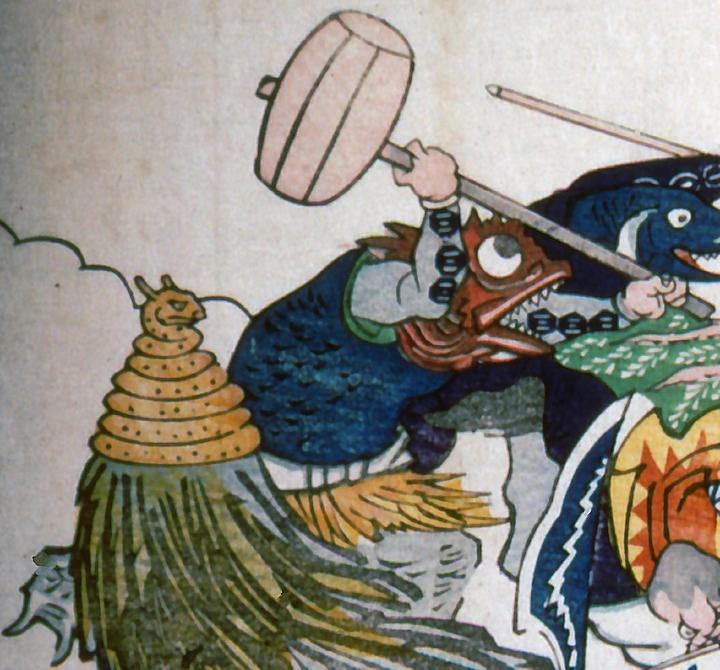

← 图鉴索引

大槌を振り上げて戦う魚。オコゼか。
出典：親書誌：A5_pushkin_0041：新宮魚勝戦；シングウウオガッセン／日付：2011／資源識別子：A5_pushkin_0041_0018_0000
Copyright (c)2010- International Research Center for Japanese Studies, Kyoto, Japan. All rights reserved.